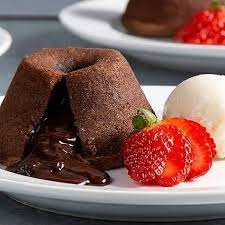

Petit gateau

Ingredientes
- 320 g de chocolate meio amargo
- 250 g de manteiga
- 5 gemas
- g de farinha de trigo
- 5 ovos batidos
Modo de preparo
- Derreter o chocolate (banho-maria ou microondas) e acrescentar a manteiga, misturando bem.
- Adicionar as gemas, misturar e deixar esfriar por 5 minutos.
- Acrescentar a farinha e por último os ovos, misturando bem.
- Assar em fôrmas de petit gateau untadas e enfarinhadas a 160º C por aproximadamente 10 minutos.
- Desenforme e sirva a seguir.
Observação
A massa pode ser congelada. Para preparar, deixar descongelar por 10 minutos em temperatura ambiente e então assar.